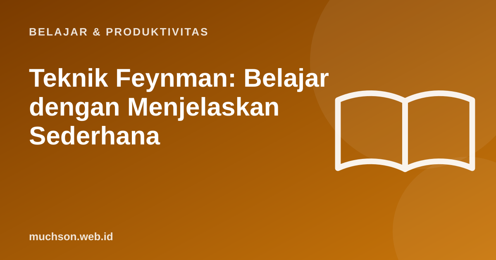

Beranda › Artikel › Belajar & Produktivitas
Belajar & ProduktivitasTeknik Feynman: Belajar dengan Menjelaskan Sederhana
Fisikawan peraih Nobel Richard Feynman dikenal mampu menjelaskan konsep rumit dengan bahasa sederhana. Dari gaya belajarnya, lahir teknik yang kini populer: jelaskan sebuah konsep seolah kepada anak kecil, temukan bagian yang macet, lalu pelajari ulang. Sederhana, tetapi sangat efektif untuk mengubah hafalan menjadi pemahaman.

Empat langkah teknik Feynman
- Pilih konsep. Tulis judulnya di bagian atas kertas, misalnya "inflasi" atau "rekursi".
- Jelaskan dengan bahasa sederhana, seolah kepada anak SMP. Tanpa istilah teknis yang tidak dijelaskan. Gunakan contoh dan analogi.
- Temukan celah. Bagian di mana Anda macet, ragu, atau terpaksa memakai istilah rumit adalah bagian yang belum benar-benar dipahami. Kembali ke sumber dan pelajari bagian itu.
- Sederhanakan dan rapikan. Tulis ulang penjelasannya lebih ringkas, dengan satu analogi yang kuat.
Kenapa menjelaskan membuat kita paham?
Penelitian psikologi pendidikan menyebut efek ini self-explanation (menjelaskan pada diri sendiri). Studi klasik Chi dan rekan (1994) menemukan siswa yang diminta menjelaskan setiap kalimat teks biologi kepada diri sendiri memahami materi lebih dalam dibanding yang hanya membaca dua kali. Tinjauan besar Dunlosky dan rekan (2013) juga menilai self-explanation dan elaborative interrogation (bertanya "kenapa?") sebagai teknik yang cukup menjanjikan.
Ada ilusi yang sering menipu: merasa paham karena materinya terasa akrab saat dibaca ulang. Menjelaskan tanpa melihat catatan memecah ilusi ini dengan cepat.
Contoh: menjelaskan inflasi
| Versi | Penjelasan |
|---|---|
| Hafalan | "Inflasi adalah kenaikan tingkat harga umum secara terus-menerus." |
| Feynman | "Dulu Rp10.000 cukup untuk dua porsi bakso. Sekarang hanya cukup satu. Uangnya sama, tapi barang yang bisa dibeli lebih sedikit. Itu inflasi: harga-harga naik secara umum, sehingga nilai uang kita turun." |
| Celah yang ditemukan | "Kenapa harga naik? Saya tidak bisa menjelaskan." → pelajari penyebab inflasi (permintaan naik, biaya produksi naik, jumlah uang beredar) |
Buat lembar Feynman Anda
Variasi agar lebih efektif
- Jelaskan ke orang sungguhan: teman, adik, atau orang tua. Pertanyaan mereka menemukan celah yang tidak Anda sadari.
- Rekam suara saat menjelaskan, lalu dengarkan kembali.
- Gabungkan dengan latihan soal: penjelasan yang lancar harus terbukti saat mengerjakan soal.
- Minta AI berperan sebagai murid yang kritis: jelaskan konsep, lalu minta AI mengajukan pertanyaan yang menguji pemahaman Anda, bukan menjelaskan untuk Anda.
Tanya jawab
Apa itu teknik Feynman?
Apakah teknik Feynman terbukti efektif?
Cocok untuk pelajaran apa?
Berapa lama setiap sesi?
Sumber dan bacaan lanjut
- Chi, M. T. H. dkk. (1994). Eliciting self-explanations improves understanding. Cognitive Science
- Dunlosky, J. dkk. (2013). Improving students' learning with effective learning techniques
- Active recall (artikel terkait)